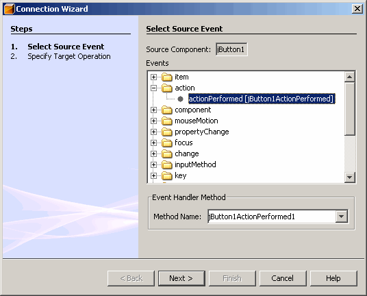
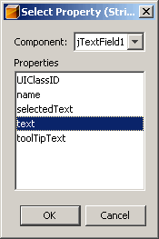

Event passing is the means by which components communicate with each other. Components broadcast events, and the underlying framework delivers the events to the components that are to be notified. The notified components usually perform some action based on the event that took place.
The event model was designed to accommodate the JavaBeans™ architecture. To understand how events and event handling work in the JavaBeans component model, you must understand the concepts of events, listeners, and sources. To refresh your knowledge in these areas, read the Writing Event Listeners lesson of the Swing tutorial.
The event model that is used by the JavaBeans architecture is a delegation model. This model is composed of three main parts: sources, events, and listeners.
The source of an event is the object that originates or fires the event. The source must define the events it will fire, as well as the methods for registering listeners of those events. A listener is an object that indicates that it is to be notified of events of a particular type. Listeners register for events using the methods defined by the sources of those events.
From the Properties lesson you discovered two event listeners. The
PropertyChangeListener(in the API reference documentation) interface provides a notification whenever a bound property value is changed and theVetoableChangeListener(in the API reference documentation) creates a notification whenever a bean changes a constrained property value.
This example represents an application that performs an action when a button is clicked. Button components are defined as sources of an event type calledActionEvent(in the API reference documentation). Listeners of events of this type must register for these events using theaddActionListenermethod.Therefore, the
addActionListenermethod is used to register theButtonHandlerobject as a listener of theActionEventevent that is fired by the button.In addition, according to the requirements of the
ActionListenerclass, you must define anactionPerformedmethod, which is the method that is called when the button is clicked.import java.awt.event.ActionEvent; import java.awt.event.ActionListener; import javax.swing.JTextArea; import java.awt.BorderLayout; import javax.swing.JButton; import javax.swing.JFrame; import javax.swing.WindowConstants; public class ButtonHandler implements ActionListener { /** * Component that will contain messages about * events generated. */ private JTextArea output; /** * Creates an ActionListener that will put messages in * JTextArea everytime event received. */ public ButtonHandler( JTextArea output ) { this.output = output; } /** * When receives action event notification, appends * message to the JTextArea passed into the constructor. */ public void actionPerformed( ActionEvent event ) { this.output.append( "Action occurred: " + event + '\n' ); } } class ActionTester { public static void main(String args[]) { JFrame frame = new JFrame( "Button Handler" ); JTextArea area = new JTextArea( 6, 80 ); JButton button = new JButton( "Fire Event" ); button.addActionListener( new ButtonHandler( area ) ); frame.add( button, BorderLayout.NORTH ); frame.add( area, BorderLayout.CENTER ); frame.pack(); frame.setDefaultCloseOperation( WindowConstants.DISPOSE_ON_CLOSE ); frame.setLocationRelativeTo( null ); frame.setVisible( true ); } }
The JavaBeans API provides event-oriented design patterns to give introspecting tools the ability to discover what events a bean can fire. For a bean to be the source of an event, it must implement methods that add and remove listener objects for that type of event. The design patterns for these methods are the following:
public void add<EventListenerType>(<EventListenerType> a) public void remove<EventListenerType>(<EventListenerType> a)These methods let a source bean know where to fire events. The source bean then fires events at those listener beans using the methods for those particular interfaces. For example, if a source bean registersActionListenerobjects, it will fire events at those objects by calling theactionPerformedmethod on those listeners.package java.awt.event; import java.util.EventListener; public interface ActionListener extends EventListener { public void actionPerformed(ActionEvent e); }
In the lesson "Using the NetBeans GUI Builder," you learned how to create a
MyBeancomponent, add theyourNameproperty, and design a simple form. Now you will set an event by which a value entered in theJTextFieldcomponent is stored in theyourNameproperty. Use the GUI Builder as follows to set such an event:
- Left click the MyForm node.
- Switch to the Connection Mode by clicking the appropriate button on the GUI Builder toolbar.
- In the Design Area or Inspector window select the OK button (
jButton1). Notice that the button is highlighted in red when it is selected.- In the Inspector window select the
myBean1component.- In the Connection wizard's Select Source Event page, select the action|actionPerformed[
jButton1ActionPerformed1] event by expanding the event type directory nodes, as represented in the following figure. - Click the Next button.
- In the Specify Target Operation page, specify the
yourNameproperty in theMyBeancomponent, and click the Next button.- In the Enter Parameters page, specify the target property by selecting the Property radio button.
- Press the ellipsis (...) button to display the Select Property dialog box.
- In the Select Property dialog box select the
jTextFieldcomponent from the Component combobox and choose the text property from the list that is presented, as shown on the following figure. - Click the Finish button.
The Source Editor window is now displayed. Since the GUI Builder automatically generates the code to connect the form's components, the following code will be added to the
MyFormclass:private void jButton1ActionPerformed(java.awt.event.ActionEvent evt) { myBean1.setYourName(jTextField1.getText()); }